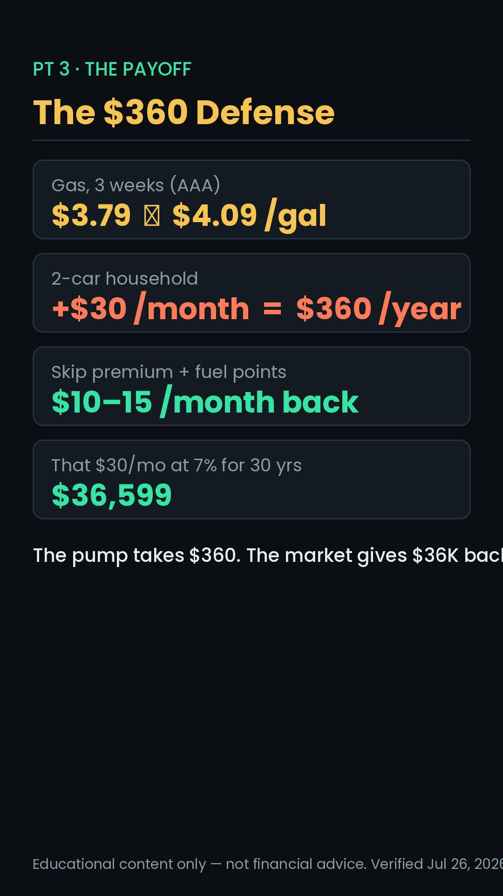
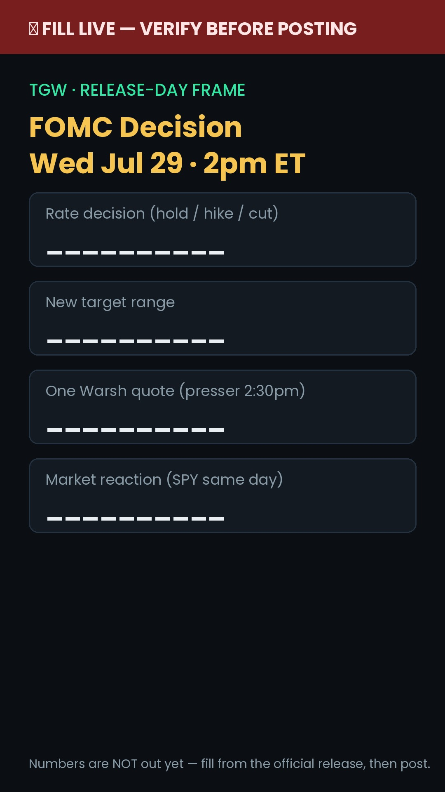
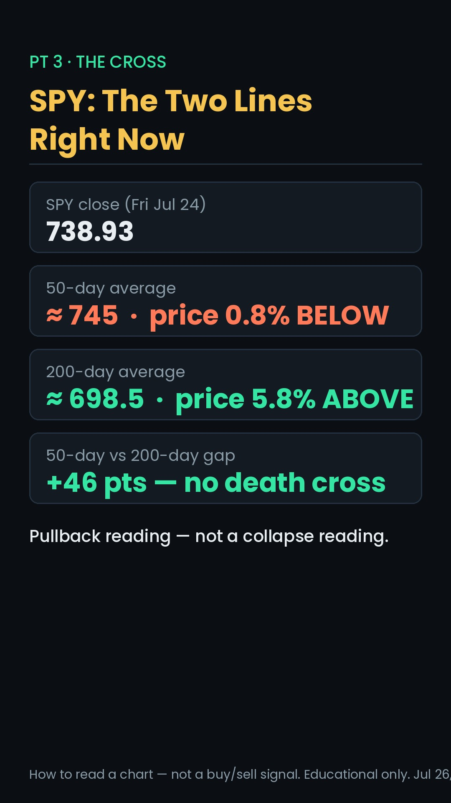
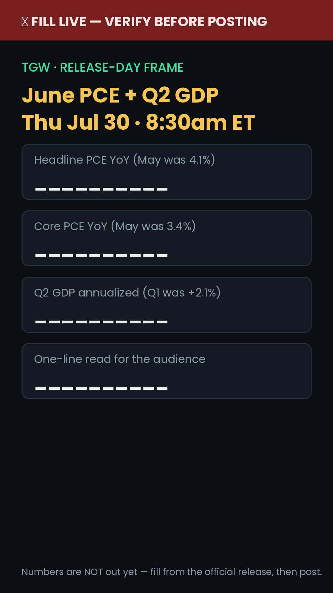
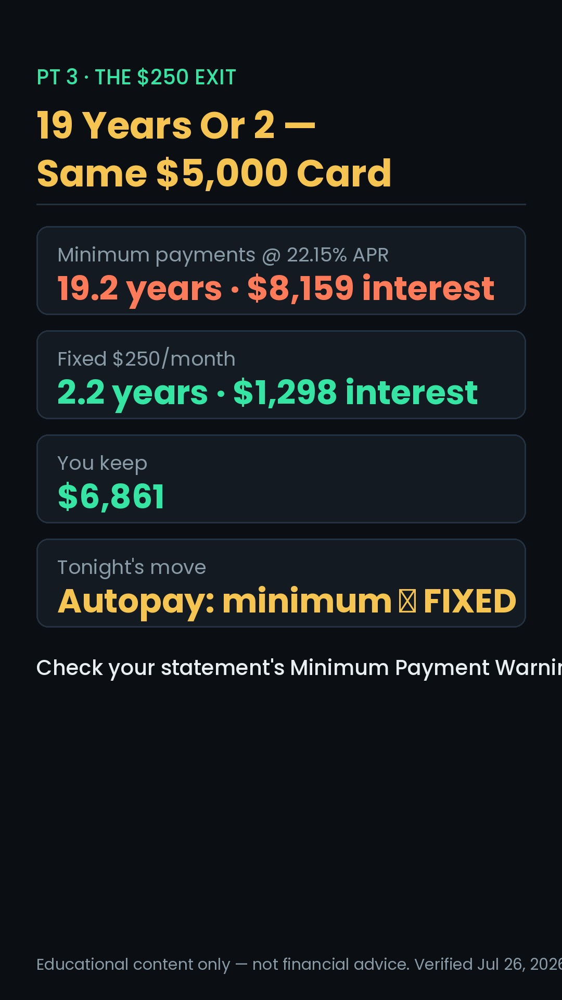

TGW Weekly Content Engine
THE HUB · EVERYTHING FOR THE WEEK LIVES HERE
🎙 TODAY — Sun Jul 26 · PODCAST FINAL + PUBLISH
"The $205 Billion Question — Big Tech's AI Bill, The Fed's Corner, And Your Money"
Built from this morning's verified data: Alphabet's record quarter that FELL 7% (rev $119.8B +24%, Cloud +82%, EPS $9.11 vs $2.87 — but capex raised to $195–205B and free cash flow negative for the first time ever) · Tesla's miss ($0.33 vs $0.44) · Intel's beat that fell 8% · the Wed FOMC call · MSFT/META Wed + AAPL/AMZN Thu with verified EPS estimates. Through-line: AI costs $200B a year — who pays, and does your portfolio get paid back?
Standing flow (locked Jul 26): every Sunday run builds TODAY'S episode fully + keeps a draft for next Sunday. Next Sunday (Aug 2) = the Fed-verdict episode — draft with FILL-LIVE blanks at scripts/podcast-rundown-NEXT-SUNDAY-Aug2-draft.md, finalized in next week's run.
This week at a glance
The 7-day plan — click any day for everything
- Strike/admin check: YouTube Studio → Channel violations — the warning is in week 4; deal with it BEFORE Tuesday's upload.
- Stage Tuesday's session: print/load all three scripts (
scripts/scripts.md), queue the b-roll galleries below, charge everything. - Community: reply to every comment on the two EYL reacts (the vein is hot — 12 net comments on TikTok last week, first positive week in a month); drop the Seg-2 podcast teaser clip from last week's episode.
- IG gap fix: last week's $3.3T react never went up on IG — post it today as a catch-up story/reel if it still reads fresh (pre-FOMC it does).


▸ Full word-for-word script (read cold, riff welcome)
- 2:00pm: decision drops. ~80% priced for a HOLD at 3.50–3.75%. If HOLD: no post — feed the decision into Thursday's community post and Sunday's podcast (fill the dashboard's FILL-LIVE fields now).
- If the Fed HIKES (the surprise): that's a major-peg 4th drop. Record a same-day react off the FILL-LIVE frame below — cold open "They Actually Raised Rates," reuse Tuesday's station backgrounds, ship inside the 2–7pm band.
- MSFT + META report after close — capture the AI-spend quotes for the podcast dashboard (panel 3).
- Community: poll — "Did the Fed get it right?" + reply sweep on Tuesday's react.



▸ Full word-for-word script
- Capture AAPL + AMZN results (reported Thu after close) into the podcast dashboard panel 3.
- Stage Saturday's react: screen-record the Caleb Hammer clip (instructions in Saturday's card), verify the 22.15% APR is still the current Fed G.19 figure, load the payoff tile.
- Cut 2 podcast teasers from Tuesday/Thursday footage using the planted-line list in the rundown.
- Community: quick-tip post — the statement's "Minimum Payment Warning" box (primes Saturday's topic).

▸ Full word-for-word script

Reference — everything below folds
📊 Last week's numbers (Jul 19–25) + the lean-into call
YouTube · 7-day
+169% · 10.6h (+167%) · +4 subs → 422 · Scratch Ticket 799 (64.8%) · EYL debt-vs-SPY react 55 @ 103.2% avg viewed — first fresh post over 100% · ⚠ strike warning week 4
TikTok · 7-day
+40.3% · likes 159 (+218%) · comments net +23 · Search 50% / For You 47.9% · top: option-chain Pt 2 428 · scratch tickets 350+338 · candlesticks 272/96K · $3.3T react 195 (shipped Wed) · Search query: "how to read advanced stock chart"
followers flat · EYL calc react 193 (78.5% non-foll.) · scratch react 209 · 30-day: 17.8K views · 88.3% non-followers · peak 3pm ET · ⚠ Wed react never shipped on IG · age/gender still mobile-only
The lean-into call
The collab streak is OVER (shipped Fri, a day early) and the "creator claim → OUR calculator → verdict" shape produced the first >100% avg-viewed post. This week: same shape (Caleb Hammer), concrete pump-price react Tue, search-demanded chart evergreen Thu.
⚙️ How the engine runs (cadence + rules)
- Cadence: 3 short-form posts (Tue react · Thu chart evergreen · Sat collab) + the Sunday podcast anchor. Non-posting days are labeled PREP/ENGAGE. A 4th drop only on a major peg (this week: a surprise Fed HIKE).
- Recording: never Monday (Wolf's rule). Tuesday = studio day (react AM + Thu evergreen + Sat collab bench); Wednesday backup. Sunday podcast unaffected.
- NEW (this run): Sunday's block is PODCAST FINAL + PUBLISH — the finished episode ships Sunday, on the board, every week.
- Hook doctrine: life outcome + specific number, viewer-subject test on every hook, banned clichés out. Sora pass: 5-beat spine, but/therefore only, countdown, mid-video re-hook, payoff last, loop-close re-uses Beat 1's literal words (adjustment #4).
- CTAs: soft weekdays · comment-trigger on news days ("PUMP" Tue) · hard DM weekends only ("AUDIT" Sat).
- Education, not advice — every asset carries the disclaimer; no trade recs, no price predictions.
🎙 TODAY'S podcast (Sun Jul 26) — "The $205 Billion Question" · records + publishes today
Through-line (opened cold, answered in Seg 4): "Big Tech just told us AI costs $200 billion a year. Who actually pays for that — and does YOUR portfolio ever get paid back?"
| Time | Segment | Points + cues (all numbers LIVE — verified Jul 26) |
|---|---|---|
| 0:00–1:30 | Cold open (word-for-word) | Google's record quarter fell 7% · Tesla missed · Intel beat and fell · the $200B question · "stay to the end — Wednesday the Fed and Microsoft answer it on the same day" |
| 1:30–11:00 | Seg 1 · The Receipts | GOOGL: $119.8B (+24%) · Cloud +82% · EPS $9.11 vs $2.87 · capex $195–205B · FCF −$5.9B (first ever) · −7% — TSLA $0.33 vs $0.44 miss, worst day in a year — INTC $0.42 vs $0.19 beat, −8% · 🖥 dashboard panel 1 · 🎬 "the market stopped paying for AI promises and started charging for them" |
| 11:00–19:00 | Seg 2 · The Buildout | capex = 42¢ of every Alphabet revenue dollar (landlord analogy) · chips→data centers→power→cloud rent · rates ARE the AI story at 3.50–3.75% · SPY two-lines read (✏️ draw) · 🖥 panel 2 · 🎬 "your index fund is funding the biggest construction project in history" |
| 19:00–28:00 | Seg 3 · The Docket | Wed 2pm FOMC (~80% hold, core PCE 3.4, $4.09 gas) · Wed PM MSFT $4.23e + META $7.18e (watch the CAPEX GUIDE) · Thu 8:30 PCE+GDP · Thu PM AAPL $1.89e + AMZN $1.82e (does Apple's restraint get rewarded?) · 🖥 panel 3 · 🎬 "the whole market in six hours" |
| 28:00–36:00 | Seg 4 · Who Pays, Who Gets Paid | the honest answer + your 3 moves ($250 fixed · two lines · $30 pump-back) · funding ladder IN FULL · Discord Q&A ×3 · 🖥 panel 4 · 🎬 "700 score and a funded brokerage BEFORE the answer arrives" |
| 36:00+ | Outro (word-for-word) | recap · Discord · D Waugh sign-off → Wolf sign-off LAST |
Full rundown: scripts/podcast-rundown.md · dashboard: screenshare/ai-buildout-dashboard.html · teaser pulls listed in the rundown.
NEXT Sunday's draft (Aug 2) — "The Week The Fed Blinked (Or Didn't)": through-line "is money cheaper or more expensive for your family in 2027?" — segments: The Verdict (FILL LIVE) → $4 Gas → Big Tech receipts (FILL LIVE) → Your 2027. Draft with blanks at scripts/podcast-rundown-NEXT-SUNDAY-Aug2-draft.md + dashboard fed-week-dashboard.html; finalized with live data in next Sunday's run.
📰 Live news pegs — verified Jul 26 (re-verify before each recording)
Wed Jul 29 · 2:00pm ET
Going in: 3.50–3.75%, ~80% hold priced, hike risk live (some desks call 4.00%). No dot plot — statement + Warsh presser (2:30) carry the signal.
Thu Jul 30 · 8:30am ET
June Personal Income & Outlays (May: headline 4.1% / core 3.4% — highest since Oct '23) + Q2 GDP advance (Q1: +2.1%). Last inflation read before September's meeting.
Wed–Thu after close
MSFT + META (Wed) · AAPL + AMZN (Thu). After Alphabet/Tesla sank last week on AI-capex fear — these four ARE the market's verdict.
The consumer story
AAA national avg Jul 23, +15¢/wk, first $4+ since 2022 · Brent ~$97 (+26% in 2 wks) on Strait-of-Hormuz strikes · EIA Q3 outlook ~$3.80 IF it calms. No jobs report this week (next NFP ~Aug 7).
🧭 Why this week's lineup (pillar × peg × audience)
| Day | Proven pillar (what wins) | Timely peg (what's now) | Audience (who's watching) |
|---|---|---|---|
| Tue | P6 concrete react — every all-time reach winner is a concrete event | $4.09 gas + Fed-eve — the most concrete number in America, 18 hours before the decision | All-platform; peak window spent here (reach-spike) · comment-trigger CTA |
| Thu | P1 chart evergreen — the 95K–125K search-durable vein, never skipped | Our own Search query this week asked for it verbatim; SPY's 50/200 story is live after the selloff | TikTok Search (50% of traffic), male 25–44 · off-peak, compounds regardless |
| Sat | Collab/guest-react — IG's ~100× format; the shape just hit 103.2% avg viewed | Caleb Hammer (panel rotation) + 22.15% APR in the week the Fed didn't help borrowers | IG-first at 3pm peak · male 25–44 wealth-builders · hard-DM weekend CTA |
| Sun | Anchor long-form — the week's clip source | The completed Fed week: verdict + PCE/GDP + 4 earnings reports IN hand | YT 35–54 family/retirement cut · publishes SAME DAY (new standing rule) |
Age-split on the flagship: Tue's react records ONE body with TWO intros — TikTok/IG 25–34 ("your fill-up, your first car loan") and YT 35–54 ("your family's $360, your refi"). Data-explainer check: PCE/GDP day gets NO standalone explainer — release-day numbers ride the FILL-LIVE frame and the podcast (audit rule: abstract data only when pegged concrete).
👥 Your audience — best times + who's watching (refreshed Jul 26)
Best posting windows (ET)
TikTok: most-active Jul 23, 2–3pm — the hour oscillates inside 12–7pm; spend it on reach-spikes. IG: peak 3pm (1,881 active), strong 9a–6p. YT: "when viewers online" still no data — long-form AM (indexing), Shorts into the evening band.
TikTok demographics
Male 82% / Female 17% · 25–34 = 40.9%, 35–44 = 26.1%, 45–54 = 9.1% · US 94.7%. Viewers-also-watched: Carterpcs, Credit Karma, tradepulse.edge — tech/finance-tool adjacents.
YouTube demographics
Male 100% (7-day) · 35–44 = 39.3% top · 45–54 = 21.6% · 55–64 = 7.2% · US 78.7% · mobile 77.8% / TV 15.7% · 98.3% of watch time non-subscribed → discovery channel; route family/retirement stakes here.
7,523 followers · 30-day reach 12,238 · Reels = 99.3% of interactions · peak 3pm ET · ⚠ age/gender/location still MOBILE-ONLY — pull from the app when possible (gap stands).
Content gaps by demographic
YT 35–54 → 401(k) match/true-up, backdoor Roth, RSUs (bank #36–40). TikTok 25–34 → first brokerage, buy-vs-rent, student loans (#41–45). Parents/female reach → custodial/529, couples-and-money (#46–47). Bonds explainer gap still open ("best treasury bonds to buy 2026" query, 2 wks running).
🎬 Evergreen Reel Bank — this week's pull + the tiers
This week's pull: NONE — full slate. Tue react + Thu evergreen + Sat collab + Sun podcast leaves no open evergreen slot under the 3+1 cadence. Standby: the collab SHIPPED last week (streak over), so reel #16's drop-dead clause stands down — it stays staged as a general backup. #30 (volatile-market) stays held for the next true selloff week. A surprise-hike 4th drop would be a fresh react, not a bank pull. Full bank ships with this site: TGW Evergreen Reel Bank.md
| Tier | Reels (# · title · on-screen · CTA) |
|---|---|
| TIER 1 · IG-priority | 7 Behind TGW · 8 Real work day · 9 Why I started · 13 Discord transformation · 16 Think vs reality (staged) · 17 Before vs after · 29 When it got real (all soft) — debate/save-bait: 10 Investing myth · 14 Bad money advice · 18 Before you invest · 22 Unpopular opinion · 32 Why it's not growing · 34 Comment [WORD] (comment-trigger) |
| TIER 2 · filler | 1 Small wins · 2 Costliest lesson · 4 Pay yourself first · 5 Start scared · 6 Wish I knew · 11 Beginners get wrong · 12 My process · 15 From $0 · 20 What I'm building · 21 Where to start · 23 Beginner vs pro · 25 Emergency fund · 26 5-min move · 28 Why people quit · 30 Volatile market (HELD) · 31 Do this instead · 35 DM me (hard, wknd) |
| TIER 3 · TT-Search | 3 Morning routine · 19 Free tools · 27 Why DCA wins · 33 Automate it |
| Demo adds 36–47 | YT 35–54: 36 401(k) match · 37 Backdoor Roth · 38 RSUs · 39 Catch-up 50+ · 40 Generational 101 — TT 25–34: 41 First paycheck · 42 First brokerage · 43 Buy vs rent · 44 Student loans · 45 Negotiation — Parents/female reach: 46 Custodial/529 · 47 Couples & money |
The bridge — one ladder, not four products
Fix the credit (Sat: the $250 exit) → get approved for funding → open a brokerage (Thu: read the chart before you fund it) → put capital to work (Tue: the $30/mo that becomes $36K). The Fed sets the weather; the ladder is your house. Say it on every multi-product touch.